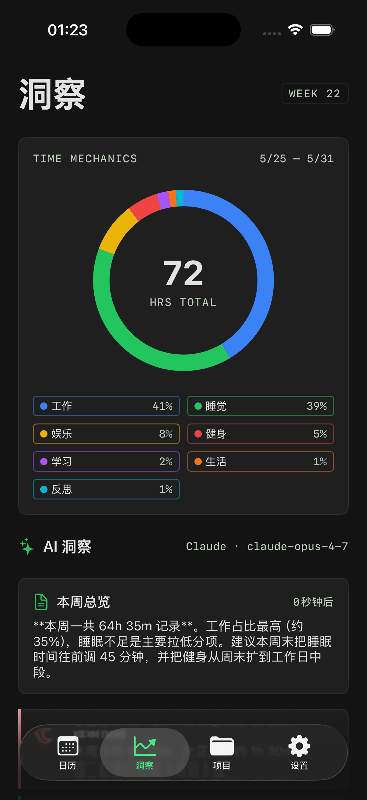
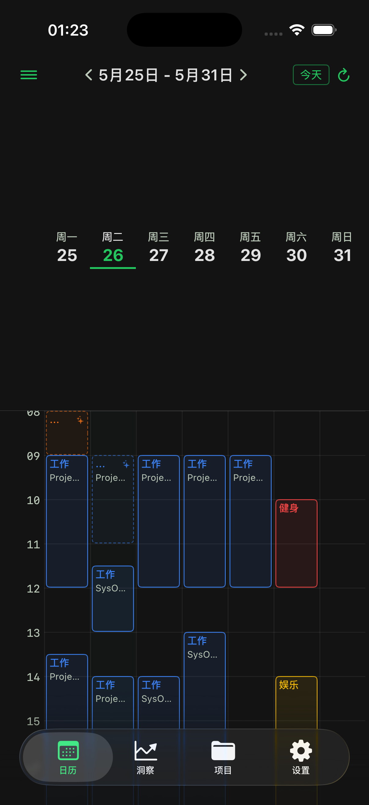
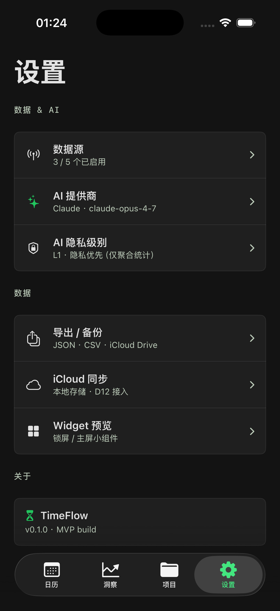

TimeFlow 被动识别 + 主动追踪你的一天，AI 帮你看清时间去向、和上周对比趋势，并直接告诉你下周该减少、增加、保持什么。不用整天点开始 / 停止。 TimeFlow passively detects and actively tracks your day, then AI shows you where time went, how it trends vs. last week, and exactly what to cut, add, or keep next week. No start/stop all day.

大多数时间记录工具要你手动开始计时 —— 坚持几天就放弃了。TimeFlow 反过来：被动采集你已有的健康、运动、位置数据自动拼出时间块，你只需要确认；想精确追踪时，点一下分类主动计时。然后 AI 把这一切变成看得懂、用得上的洞察。 Most time trackers make you start a timer manually — and you quit within days. TimeFlow flips it: it passively pieces your day together from health, motion and location data — you just confirm; and when you want precision, tap a category to track actively. Then AI turns it all into insight you can actually use.
01 · 让记录不痛苦Painless by design
这就是你愿意连续记录 30 天的原因：记录这件事几乎不占用注意力。This is why you'll keep it up for 30 days straight — recording barely costs any attention.
睡眠、通勤、运动、静止——AI 从健康 / 运动 / 位置数据识别成待确认的时间块，灵动岛实时显示，长按一键确认或改正。Sleep, commutes, workouts, focus — AI detects them from Health / Motion / Location as pending blocks, shown live in the Dynamic Island. Long-press to confirm or correct.
从桌面小组件点分类 → 选项目 → 直接计时，全程不用打开 App。忘了记？长按说一句「下午两点到四点游泳」，AI 自动拆成时间块。From the home-screen widget: tap a category → pick a project → it times right there, never opening the app. Forgot? Long-press and say "swam 2–4pm" — AI splits it into blocks.

02 · 看清See
日历周视图把每一段时间按 7 大分类涂上颜色。虚线框 + ✨ 是 AI 自动识别、等你确认的；实线是已确认的。一眼就知道时间真正去了哪。The weekly calendar paints every stretch of time in one of 7 categories. Dashed + ✨ means AI detected it and is waiting for your confirm; solid means confirmed. One glance shows where time truly went.
03 · 趋势Trends
本周 / 本月 / 近 30 天 / 今年随意切换。一个环看清总时长与各类占比，再看覆盖率、各分类相比上一周期的涨跌——趋势比某一天的数字重要得多。Switch between this week / month / 30 days / year. One ring shows total hours and category share; then see your coverage and how each category rose or fell vs. the previous period — trend matters far more than any single day.

04 · 优化Optimize
不止是「花了多久」。接入你自己的 AI（Claude · Gemini · DeepSeek · Kimi · 豆包），按周 / 月关联睡眠 × 健身 × 工作，找出异常的真正原因，并给一个具体、可执行的下周实验。More than "how long." Bring your own AI (Claude · Gemini · DeepSeek · Kimi · Doubao) to correlate sleep × fitness × work weekly or monthly, find the real cause behind anomalies, and hand you one concrete, doable experiment for next week.
05 · 隐私Privacy
没有账户、没有我们的服务器（无需注册登录）。数据自动同步到你自己的加密 iCloud —— 只在你的设备之间，苹果和我们都读不到。除此之外，数据离开你的掌控只在你主动点「生成 AI 洞察」时、且按你选的隐私级别脱敏后，才发给你自己配置的 AI 服务商。No account, no server of ours (no sign-up). Your data auto-syncs to your own encrypted iCloud — only between your devices, unreadable by Apple or us. Beyond that, data leaves your control only when you tap "Generate AI insight", redacted to the privacy level you chose, sent to the AI provider you configured.
只发聚合占比 / 时长统计，不含项目名、地点。Only aggregate share & durations — no names, no places.
+ 匿名化时间块图案，项目名替换为 A / B / C。+ anonymized block patterns; names become A / B / C.
+ 项目名与自定义分类名，可在设置随时切换。+ project & custom category names; switch anytime in Settings.
06 · 价格Pricing
最终价格将在上架时公布。Final pricing announced at launch.
还在做最后的打磨。留个邮箱，App Store 上架当天通知你——不发广告，只发这一封。We're putting on the final polish. Leave your email and we'll ping you the day it hits the App Store — no spam, just that one note.